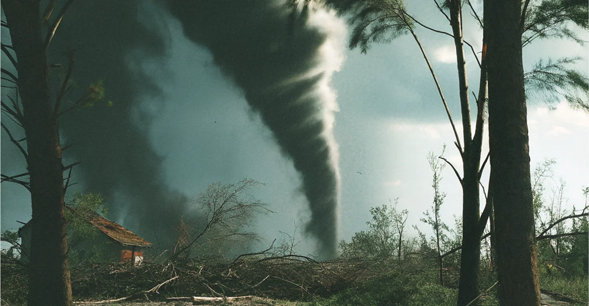

Поведение животных перед стихийными бедствиями
Животные давно считаются чувствительными к изменениям в окружающей среде, и их поведение часто меняется перед стихийными бедствиями. Это явление привлекло внимание ученых и общественности, стремящихся понять, как звери предчувствуют катастрофы.
Землетрясения
Многие животные демонстрируют аномальное поведение перед землетрясениями. Например, муравьи, змеи и жабы были замечены за необычной активностью или массовым уходом из своих жилищ за несколько дней до сейсмических событий. Исследователи предполагают, что животные могут чувствовать изменения в магнитном поле или уровне CO2, происходящие перед землетрясением.
Цунами
Перед цунами животные также проявляют необычное поведение. В 2004 году слоны на Шри-Ланке ушли вглубь острова за час до катастрофы, что спасло их жизни. Рыбы и птицы также демонстрировали странное поведение перед цунами, возможно, из-за изменений в воде или атмосфере.
Домашние животные
Домашние питомцы, такие как кошки и собаки, также реагируют на приближение стихийных бедствий. Они могут становиться беспокойными, громко мяукать или лаять, что может быть вызвано изменениями в атмосферном давлении или вибрациями земли.
Научные объяснения
Хотя существует множество наблюдений об аномальном поведении животных перед стихийными бедствиями, научные доказательства их способности предсказывать катастрофы все еще ограничены. Исследователи предполагают, что животные могут чувствовать первичные сейсмические волны, которые распространяются быстрее, чем основные ударные волны. Однако эти теории еще не получили широкого признания в научном сообществе.
Что в итоге?
Поведение животных перед стихийными бедствиями продолжает привлекать внимание ученых и общества. Хотя научные объяснения еще не полны, наблюдения за аномальным поведением животных могут служить дополнительным инструментом для мониторинга и предупреждения о надвигающихся катастрофах.